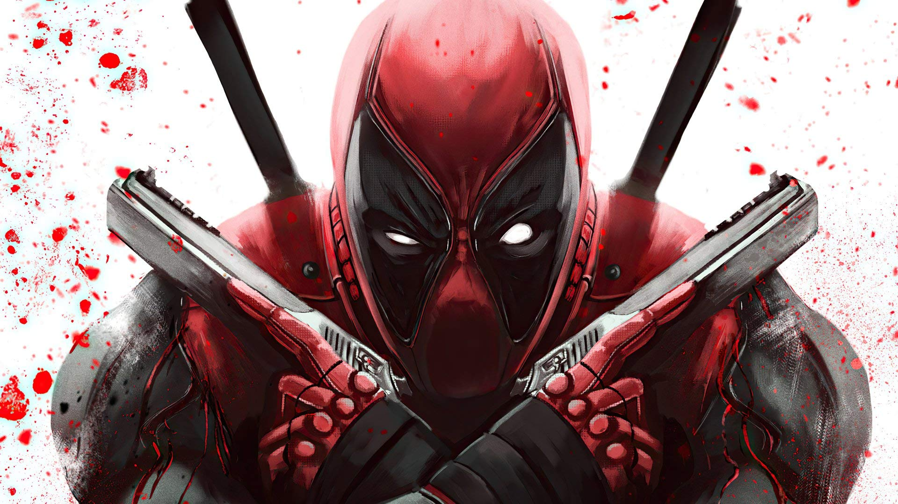
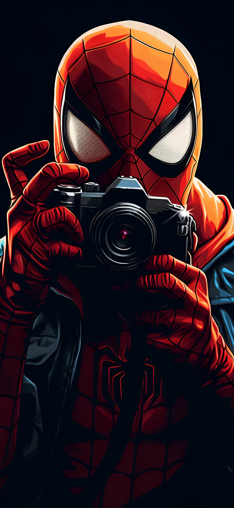

Estan formadas por puntos de colores por ejemplo:
los videojuegos de suoer mario
Ventajas
Permiten presentar imágenes sin formas definidas
Desventajas
Pierden mucha calidad al ampliarlas y ocupan mucho espacio en el disco duro
2. Imágenes vectoriales
Estan formadas por formas geométricas por ejemplo:
imágenes de iconos, ilustraciones, etc
ventajas
Ocupan poco espacio y se pueden ampliar sin perder calidad
Desventajas
No permiten representar imagenes sin formas definidas, como si ocurre con las fotos
Formatos de imágenes vectoriales:
.svg .eps .ai
Formatos de imágenes de mapa de bits
.bmp .jpeg .jpg .png .gif .tif .psd
JPG Y JPEG
Adecuado para fotos
Compresión con pérdidas
Conserva el color original
16 millones de colores
Permite modo progresivo de aparición
No permite transparencias ni animaciones
GIF
Adecuado para dibujos
Compresión sin perdidas
Usa el algoritmo LZW
256 colores
Permite transparencias
Permite animaciones
No degrada el color
Tiene derechos de autor
PNG
Adecuado en general
Compresión sin pérdidas
Millones de colores
Permite transparencias
Permite metadatos
Es editable
Las fotos pesan más
No permite animaciones
Insertar imágenes en html
img: es una monoetiqueta, no tiene cierre que usamos para insertar imágenes
Atributo src="" nos ayuda a localizar la imagen
link de la imagen dirección /ubicación y el formato que tiene
Siempre hay que poner el formato
ejemplo: img src="img/deadpool.jpg" alt="Esto es para poner lo que es si se va la imagen"

Atributos de img
src: Dirección o URI de la imagen
alt: alternativo, lo que indica es un breve texto de la imagen en caso de que no se pueda cargar o no esté disponible
width y height Sirven para dar un tamaño de ancho y alto, se suele medir en px
usemap: para hacer mapeado de imagenes, como la foto de arriba de deadpool
title:Para mostrar un tip con info sobre la imagen, cuando pasamos el raton sobre la foto
ETIQUETA PICTURE
es una etiqueta HTML que se utiliza para representar una imagen o un grupo de imágenes.
La etiqueta es una forma más eficiente de representar imágenes en HTML que la etiqueta tradicional.
src: La URL de la imagen o el grupo de imágenes que se va a representar.
alt: El texto alternativo que se muestra cuando la imagen no se puede cargar.
sizes: Una lista de pares de ancho y altura que se utilizan para definir
las dimensiones de la imagen o el grupo de imágenes en diferentes dispositivos.
imagesrcset: Una lista de pares de URL y anchos que se utilizan
para definir las imágenes que se van a mostrar en diferentes dispositivos.
La etiqueta se compone de una o más etiquetas . La etiqueta define una
imagen que se va a representar en un dispositivo específico.
La etiqueta figure
Permite asociar un texto con una imagen, como si tuviera un pie de página.
Estructura:
La etiqueta figure, que es la padre
img: insertar la imagen
figcaption: es la tarjeta que contiene el texto asociado

Spiderman saca una foto a Wen
INSERTAR UN VIDEO DE YOUTUBE
Pincho en el video que quiero insertar
Con el botón derecho del ratón, copiar código de insercción
INSERTAR UN DESTINO DE GOOGLE MAPS
Pincho en el lugar que quiera
Le das a compartir y dentro de este
insertar un mapa